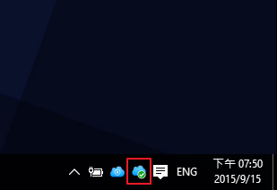

Panoramica
Cloud Station per Synology NAS è un'applicazione per la sincronizzazione di file che permette di sincronizzare i file facilmente sulla propria Synology NAS con altri dispositivi, come computer o dispositivi mobile (come DS cloud). Installare Cloud Station Server in Synology NAS e Cloud Station Drive nel computer per sincronizzare automaticamente i file archiviati nel computer su Synology NAS.
Configurare la connessione tra Synology NAS e il computer
- Andare su Centro pacchetti, individuare Cloud Station Server e fare clic su Installa.
- Avviare Cloud Station Server.
- Nella scheda Panoramica, fare clic sul pulsante in Cloud Station Drive per scaricare Cloud Station Drive per il sistema operativo (è anche possibile scaricare Cloud Station dal Centro download Synology).
- Lanciare il programma di installazione nel computer e seguire le istruzioni sulla schermata.
- Dopo l'installazione, eseguire Cloud Station sul computer. Fare clic su Avvia adesso.
- Inserire l'indirizzo per il Synology NAS che esegue Cloud Station (o l'ID QuickConnect), nome utente e password. È possibile fare clic sull'icona di ricerca a destra per cercare gli IP nella LAN. Fare clic su Avanti.
- Selezionare le cartelle da sincronizzare in Synology NAS e nel computer facendo clic sulle icone Modifiche. Quindi, è possibile fare clic su Avanzate per configurare le impostazioni di sincronizzazione
- Deselezionare tutte le cartelle da non sincronizzare.
- Impostare una dimensione di file massima oppure i tipi di file o i nomi file della black list in modo che non saranno sincronizzate.
- Selezionare se eseguire la sincronizzazione bidirezionale oppure scaricare solo i dati da Synology NAS.
- Fare clic su Fine per completare la configurazione.
- L'icona Cloud Station si trova nell'area di notifica. 
- Fare clic sull'icona della barra delle applicazioni per aprire il menu. Qui, è possibile visualizzare l'avanzamento e lo stato dei file. Qui, è possibile visualizzare l'avanzamento e lo stato dei file. Fare clic su App principale per avviare Cloud Station.
- All'avvio, verranno mostrati alcuni suggerimenti su come usare Cloud Station. Fare clic sulla freccia a destra per vedere altri suggerimenti oppure fare clic su Tutorial online per maggiori informazioni. Per non visualizzare i suggerimenti, spuntare la casella accanto a Non mostrare più.
- A questo punto, sarà possibile gestire le attività di sincronizzazione in Cloud Station Drive.


Scaricare una versione precedente di un file sincronizzato
- Fare clic sull'icona Cloud Station Drive nella barra delle applicazioni, quindi fare clic sull'icona della cartella.
- Fare clic con il tasto destro sul file e scegliere Synology Cloud Station > Sfoglia le versioni precedenti.
- Trovare la versione che si desidera scaricare e fare clic sull'icona del download.


Scaricare o ripristinare una versione precedente di un file sincronizzato da Cloud Station Server
- Andare su Cloud Station Server > Cronologia versioni e individuare il file o la cartella da ripristinare.
- Scegliere il file da recuperare e fare clic su Azione > Sfoglia le versioni precedenti.
- Scegliere la versione del file da scaricare e fare clic su Scarica. Oppure, per ripristinare la versione selezionata, fare clic su Ripristina e la versione corrente verrà sovrascritta.


Note importanti
- Conservare sempre le versioni della cronologia qualora un file venga eliminato o sovrascritto per sbaglio.
- In Impostazioni globali è possibile configurare se un file debba essere rilevato da NAS o eliminato su NAS quando si elimina un file sul computer.
Sincronizzare dati sui dispositivi mobile
DS cloud è disponibile gratuitamente su Apple App Store e su Google Play Store. È anche possibile scannerizzare il seguente codice QR per effettuare il download immediato.